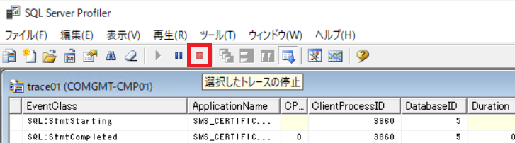

SQL Server データベースに対して実行されたクエリやストアド プロシージャなどのイベント データをトレースする SQL Server Profiler による情報採取手順です。
SQL Server がインストールされたサーバーで手順を実施します。
採取時は一時的に負荷が発生する場合があります。なお、OS 再起動の必要はありません。
Configuration Manager のサイト データベース サーバー
SQL Server Management Studio を開きます。
メニュー バーより、[ツール] - [SQL Server プロファイラー] をクリックします。
SQL Server Profiler が起動します。「サーバーへの接続」ダイアログが表示されるので、サイト データベースに接続します。 ダイアログが表示されない場合は、 メニュー バーより、[ファイル] - [新しいトレース] をクリックすると、ダイアログが表示されます。
[全般] タブでトレース名に任意の名前を入力し、使用するテンプレートは [空白] を選択します。
[イベントの選択] タブで [すべてのイベントを表示する] [すべての列を表示する] にチェックを入れます。
イベント列を展開し、以下のイベントを選択して、[実行] をクリックし、情報採取を開始します。
1 | - Broker すべて |
[選択したトレースを停止] ボタンをクリックし、情報採取を停止します。

停止後は、メニュー バーより、[ファイル] - [名前を付けて保存] - [トレース ファイル] をクリックし、.trc ファイルの保存、及び採取をお願いします。